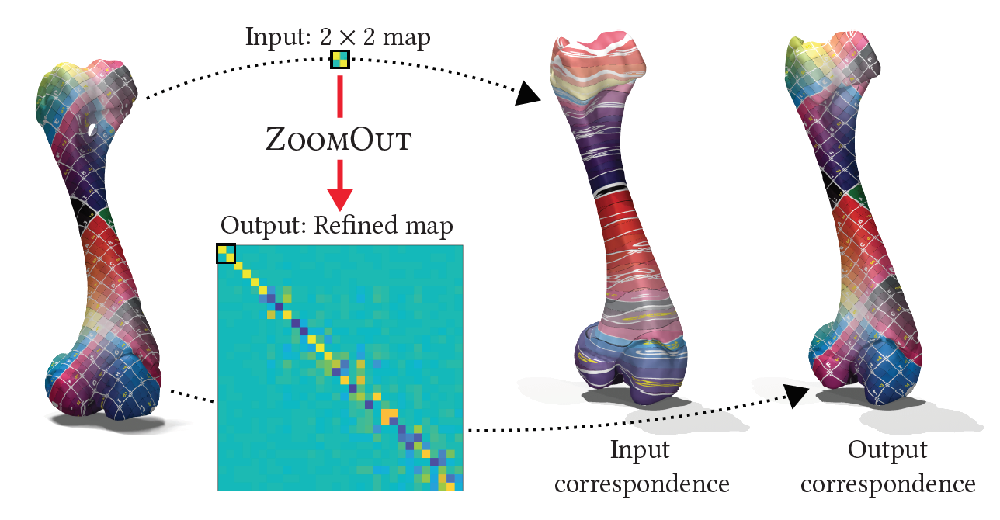
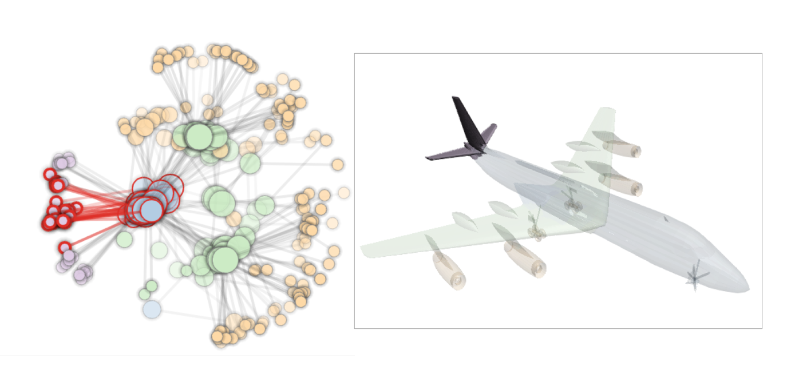
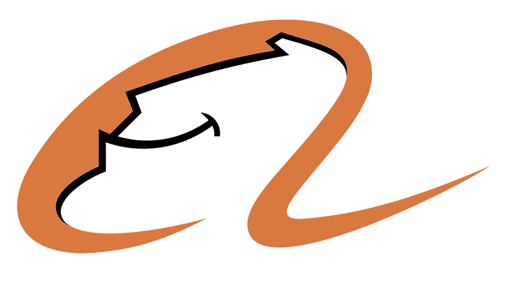

About me
I am currently a Ph.D candidate in VCC, KAUST, supervised by Prof. Peter Wonka. Before that, I obtained the MSc. degree from Oxford University, UK, and the BSc. degree from Zhejiang University, China. My research is mainly related to shape analysis and geometry processing. I am also interested in computer graphics and computer vision in general. Currently I am working on shape matching with deep learning and shape reconstruction with optimization techniques.
You can find my full CV here.
Publications
2021

Gautam Pai, Jing Ren, Simone Melzi, Peter Wonka, Maks Ovsjanikov
Proc. IEEE Conference on Computer Vision and Pattern Recognition (CVPR), 2021
paper suppl. code
2020

Jing Ren, Peter Wonka, Gowtham Harihara, Maks Ovsjanikov
L’Anthropologie, 2020
paper (official) paper (preprint) code

Jing Ren, Simone Melzi, Maks Ovsjanikov, Peter Wonka
ACM Transactions on Graphics (Proc. SIGGRAPH Asia), 2020
paper code slides presentation

Yiqun Wang, Jing Ren, Dong-Ming Yan, Jianwei Guo, Xiaopeng Zhang, Peter Wonka
ACM Transactions on Graphics (Proc. SIGGRAPH), 2020
paper code slides

Ruqi Huang, Jing Ren, Peter Wonka, Maks Ovsjanikov
Computer Graphics Forum (Proc. SGP), 2020
paper code presentation
2019

Simone Melzi*, Jing Ren*, Emanuele Rodolà, Abhishek Sharma, Peter Wonka, Maks Ovsjanikov
ACM Transactions on Graphics (Proc. SIGGRAPH Asia), 2019
paper code slides (* equal contribution)

Jing Ren, Mikhail Panine, Peter Wonka, Maks Ovsjanikov
Computer Graphics Forum (Proc. SGP), 2019
paper code slides
2018

Jing Ren, Adrien Poulenard, Peter Wonka, Maks Ovsjanikov
ACM Transactions on Graphics (Proc. SIGGRAPH Asia), 2018
paper code slides
2017

Jing Ren, Jens Schneider, Maks Ovsjanikov, Peter Wonka
IEEE Transactions on Visualization and Computer Graphics (TVCG), 2017
paper code slides video
Education
 Ph.D. in Computer Science
Ph.D. in Computer Science
KAUST, Visual Computing Center
2015 - 2021
M.Sc. in Financial Mathematics
Oxford University
2014 - 2015
 B.Sc. in Math and Applied Math
B.Sc. in Math and Applied Math
Zhejiang University
2010 - 2014
Research Experience
 Alibaba, DAMO Academy, AI Center (City Brain)
Supervised by Dr. Chang Zhou and Dr. Lubin Fan
July 2020 - June 2021
Ecole Polytechnique, LIX
Supervised by Prof. Maks Ovsjanikov
Jun - Aug 2017, 2018, 2019